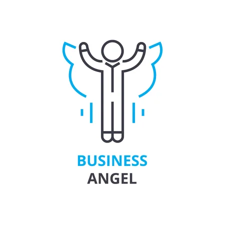

Un Business Angel es una persona que proporciona capital para un negocio o el inicio de un negocio, generalmente a cambio de deuda convertible o capital de propiedad. Los inversores ángeles suelen dar apoyo a las empresas emergentes en los momentos iniciales y cuando la mayoría de los inversores no están preparados para respaldarlos.
Apuntes: Son personas que aportan financiación y experiencia a nuevas empresas con el ánimo de obtener un beneficio, pero acompañado de una aportación altruista de apoyo al que lo necesita, ya que aportan contactos y apoyo en los momentos iniciales.
